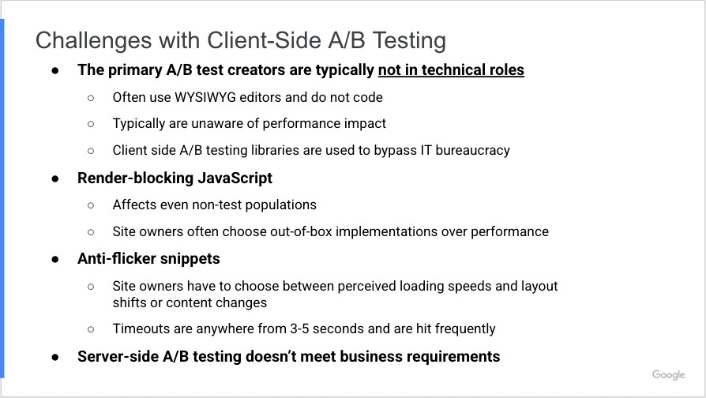
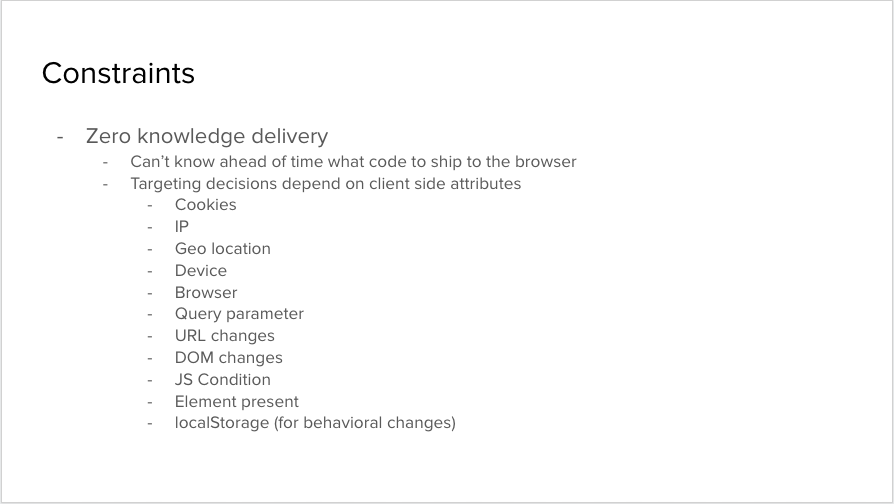

The Web Performance WG invites the broader web performance community to discuss A/B testing and ways we can collectively work to make it faster! The goal of this open meeting is to explore the problem space, try to reach common understandings on the benefits and shortcomings of the current approaches, and brainstorm a brighter future and how we can get there.
We plan to have representatives from across the web performance and A/B testing community, including:
- WebPerf WG members
- A/B testing providers
- Web performance consultants
- CDNs
- Content platforms
Logistics
When
Thursday February 4th, 12-2:30pm PST (9-11:30pm CET, 8-10:30pm GMT, 5-7:30am JST)
Where
Online!
As always with WG calls, the meeting will be recorded and recordings as well as minutes will be posted online.
Attendees
To register, simply add your name, email and employer (if relevant) below.
Reading material
Real-Life Performance and Client-Side A/B Testing Challenges
Client side A/B testing outside of the client
Client-side A/B Testing and Performance (a match made somewhere other than heaven)
Agenda
Times in PST
W3C’s Code of Ethics and Professional Conduct
Conclusions
- A/B testing providers need better ways to load their scripts
- The library+experiment code would benefit from “render blocking but not parser blocking” semantics, potentially with a developer defined timeout.
- That would enable to improve performance and eliminate SPOF and need for anti-flicker snippets.
- Analytics code would benefit from a simpler way to load the code at idle time
- Browser support for a standard-track transformation language could benefit the industry
- A/B testing providers seemed willing to support such a language
- At the same time, there was some skepticism about the potential performance benefits
- Web shared libraries could reduce the amount of code each A/B tested page loads
- There’s appetite for native support for an “experiment variant” primitive, over today’s use of cookies for this purpose, for both convenience as well as caching reasons.
- The definition of First Paint could take anti-flicker snippets into account and surface cases where UX is degraded by them (e.g. by turning the page blank)
- May be interesting to explore avoiding the paint of specific elements on the page, rather than blocking the full render.
Recordings
Part 1 - Talks
Part 2 - Brainstorming
Minutes
Intro
- Yoav: A lot of misunderstanding between web performance and A/B testing communities
- … We have common goals of making sites faster and better for users
- … Try to figure out a solution
- … Today we have talks from Tim and Melissa on real-life problems we see today
- … Greeshma and Dimitris talk about how A/B testing works today
- … Will have a short proposal as well
- … This meeting is covered by W3C Code of Professional Conduct
- Tim: Work on WPT at Catchpoint!
- … Prior to that was performance consulting, and this is from things I was seeing
- … Client-side A/B testing works by providing some JS to browser, which may manipulate DOM or CSS to apply A/B testing
- … As you would expect, any time we’re doing this, we want to try to avoid shifts or flickering of content
- … Challenge for A/B providers is finding a way to combat this: how do we get experiments down to browser as efficiently as possible to ensure shifting/flickering doesn’t occur
- … Easiest option is to drop in a synchronous script
- … Gets higher priority on the network, blocks page until experiments are applied
- … From a performance perspective, we’ve now moved that 3P into the critical path
- … e.g. on example site w/ Optimizely the script causes a block of 2.3+seconds
- … HTML parsing is completely paused during that time
- … There’s predictable correlation between engagement and conversion rates and first paints, and this slows it down significantly
- … A blocking script also introduces a SPOF failure risk
- Kenji: I would like to know how often that happens
- Tim: Yes we can try to look into that
- … Recommended reading on self-hosting vs. third-party domains
- … Alternative approach is to use an async script, to mitigate SPOF risk
- … But now the page could be displayed before those experiments are applied, risking shifts and flicker
- … Typically when we see this, it’s paired with some CSS by setting opacity:0 or something similar to avoid flicker
- … Introduces its own type of risk, where CSS hides content and JavaScript never loads, page remains blank
- … Google Optimize default snippet sets 4 seconds timeout for JavaScript to load
- … If it doesn’t come in within that window, then page will be displayed and experiments won’t run
- … Google Optimizer, Adobe Target, Visual Web Optimizer have different default timeouts of 4/3/2.5s
- … These timeouts may seem high. 4s is a lot
- … We’re potentially pushing out render for that many of seconds
- … But timeouts have to be high because the async script may come late (low priority)
- … Example from Andy Davies where VWO has low priority, in second loading phase, contents with other body content (and is uncacheable)
- … Page is hidden for two seconds before that script arrives and executes
- … Can be hard to catch with RUM as FCP may fire early because opacity:0 is contentful
- … Some examples where RUM looks great and only when we look at WPT that you can see a problem
- … Gets worse when using a tag manager for doing experiments
- … One audit shown had the 86th request on the page be the request that applies the experiments and renders the page
- … They were reaching Google Optimize timeout of 5 seconds about 30% of the time
- … Andy wrote a great post on anti-flickr snippets
- … A single snippet can include many events, pages and experiments
- … Experiments may have a tendency to linger on and may be inefficiently written
- … We’ll often see large JS payload for the experiment, resulting in Long Tasks
- … Observing the DOM can be expensive
- … A/B testing is the perfect marriage of third-party risk and JavaScript bottlenecks
- … Why people use it? Some data is only on the client, can be used to workaround dev cycles
- … Perceived cost that Client-side A/B is cheaper than perf
- … But has to be offset by the cost of lost conversions because of performance degradation
- … Can also be simpler to setup
Chat conversation
- Kenji: Does anyone have data about how often SPOF is actually failing?
- Michal: Does the anti-flicker timeout result in population bias for the test?
- Michael Hood: performance (user experience) itself introduces population bias into A/B tests. I think you could consider the timeout as resulting in a "trimmed" population. If the statistical accuracy is that deeply important to the administrator of the test, it's one of many things they'd need to consider that current tools don't natively take into account.
- Dave Pifke: Timeouts won't be evenly distributed across the population, though. Users on slow connections will be under-represented in the test.
- Nathan Tate: The problem is a little more complicated than that. Users on slow connections may even only timeout some of the times, which means you have a group of users who are getting an inconsistent experience, sometimes seeing the original, and sometimes seeing the variant
- Melissa: Web Ecosystem Consultant from Google focused on Core Web Vitals
- … A/B testing almost always comes up, one of the struggles they’re working around in meeting CWV
- … Example of zales.com using Maximiser AMP+PWA
- … FCP increases by 4 seconds (likely hitting timeout)
- … LCP delayed by a second as well
- … Additional shift of 0.17 just from this A/B testing library
- … Another example for NPR, best-case scenario from out of the box A/B testing
- … React SPA (not AMP) with their A/B testing they see about a second impact on their pages
- … LCP is last piece for meeting CWV, and they’re right on the edge
- … That A/B impact is the factor in meeting CWV
- … Challenges: Primary A/B test creators are typically not in technical roles, using WYSIWYG editors to bypass internal bureaucracy
- 
- … Universal Truth: Users are never going to use software in the way developers intend
- … Corollary: Your users may not be who you think and intend them to be
- … Business Use Cases for Client-Side Testing:

- … Increase conversions/revenue, reduce workload on marketing teams (not often technical),
- … Reduce outsourced engineering costs
- … Allows tests independent of release cycles (many companies slow with cycles, every 2 weeks or every 2 months). Businesses use A/B testing to adjust to this, rather than put chages in through code deployments.
- … Successful tests live until development work is done
- … Avoid excess design work for tests, can be extra burden in some processes
- … Can double as personalization library
- … Avoid tech debt, 70% of tests are unsuccessful or inconclusive, so not adding them to the code base permanently helps
- … A/B testing is solving these pain points
- Yoav: Questions from chat:
- Alex: Is solution to serve content A/B from first-party and eliminate all third-party delay
- Melissa: Need some JavaScript to decide is person is in group A or B, someone else may be able to talk about whether 1P could help
- Alex: One thing I noticed from scraping websites is they’d often respond with content A or B if there was no cookie. I wonder why we’re not pushing people towards that model
- Melissa: If you have to have page A and B written, then engineering resources have to write those pages. Teams doing these tests are not engineers, and may not get engineering resources allocated fast enough.
- Andy: Many people use platforms that just don’t support it, i.e. using ecommerce platforms or publishing platforms that don’t have any concepts of experimentation built into them.
- Melissa: Kenji’s point that it has to be free or cheap enough, there’s always a cost-benefit
Chat conversation
- Alex: I may be naive, but isn't the obvious solution to all of this to just serve either content A or content B from the first party and eliminate all this third party timeout delay?
- Andy: Many sites use ecommerce / publish platforms that don't support it
- Greeshma: Also typically, there can be anywhere between 1-5 experiments per page, each with a different targeting conditions. And further, with SPA, navigation means you will have to apply experiments without loading from server side
- Kenji: Probably also increases the IT bureaucracy factor / implementation burden, which makes it less appealing than the current 3P + client-side approach.
- Ilya: I can't think of any platforms that support A/B testing as a first-class thing. For those that have dedicated dev teams, this is plausible but not easy; most of the web doesn't have access to developer time and resources. Plus other bits that Melissa and Tim mentioned: speed, access to client-side data, WYSIWG, etc.
- Andy: Sitespect is the only CMS I know of that supports testing as a first class thing
- Michael Hood :What Greeshma said is the biggest fundamental issue from my POV, the proliferation of SPA / client-side hydration makes it all but impossible to do complex testing without venturing into the browser-side
- Kenji Baheux: wondering if A/B vendors have data on how often experiments are launched at 100% as a fix, feature, etc.
- Aly Cabral: what are examples of client data that could not be passed to the server or edge?
- Ilya Grigorik: Aly: For example, if you want to have a conditional experiment based on your analytics (which is often outsourced and not accessible on the server), your ad provider, etc.
- Michael Hood: what Ilya said, plus "data layers" to use tag manager parlance, targeting info that's brought in via JS and made available in some JS object/API
- ... it's actually worsening with the restrictions from ITP and similar browser mitigations. more stuff is injected in the page now, harming cacheability
- Ishan Anand: Agree strongly with the SPA comments. Gets extra complex when folks are using SSR + SPA. So you need to change both the SSR and the SPA navigation content.
- Dave Pifke: Product idea for CDNs. ;)
- Ilya Grigorik: CDNs can help but don't solve this problem
- Kenji Baheux: Gotta be free (or cheap enough) too.
- Ilya Grigorik: Server side testing: possible and great, for those that have access to all necessary signals on the server *and* engineering resources to setup and run this.
- Dave Pifke: The CDN could segment the population and serve different A and B versions. They're independent of the platform used by the origin.
- Michael Hood: That supposes that there is simply an "A" and "B" version - people who pay for e.g. Optimizely are not testing this way
- … imagine there are 3 experiments on a page with 2 variations each. it's a combinatorial explosion of permutations of every single page. if you fragment your CDN cache enough you might as well just turn off caching
- Kenji Baheux: As in A1+B1+...+Z2 vs. A2+B2+...Z1 vs ... , right?
- Michael Hood: If a given page has 3 experiments, but the entire site has 2 "global" experiments (let's say a change to the masthead, and whether to pop some kind of promotion in a modal) - now you've got 5 on that page. and it's not uncommon for them all to have 2-4 variations.
- Scott Connelly: you could intercept the request and the server response to modify changes via reverse proxy
- Michael Hood: (Also, to be clear to those who don't know me well: I'm not trying to shoot down any ideas! These are all great considerations. just adding proprietary context I might have from working with big users A/B tests, and walls I ran into.)
- Scott Connelly: No optimizely moves the script to the CDN
- Michael Hood: @Scott yes that's how Optimizely's web product works, I meant what we prototyped internally that was never productized :)
- Greeshma: Here to present how Optimizely implements A/B testing
- … In addition to previous benefits, short lived experiments can be done much faster without engineering input
- … Personalization - Using third-party integrations, if someone is from Microsoft, show this. These examples make it harder when it comes to server-side experiments.
- … Constraints: Has to preserve user experience, flashing can undermine integrity of the experimentation results. We cannot split the JS without risking it loading after the page is rendered.
- … Another constraint is customers don’t want to deal with nitty gritty details. Zero knowledge delivery.
- … Targeting decisions based on client-side attributes (cookies, IP, geo, device, browser, query string, URL, DOM, JS condition, Element present, localStorage, etc)
- 
- … Experiments that execute on certain DOM changes or JS conditions
- … Depend on localStorage for behavior changes (e.g. on 3rd visit)
- … How does it work? One JavaScript snippet in the <head> of the website. Marketing folks can ask engineer to implement once, then perform all experiment changes throught the WYSIWYG editor
- … JS includes all code and data required to run tests (not just framework but the data as well), so all the experiments and variations
- … Performance challenges: Code necessary to evaluate is not cheap.
- … Can be any number of experiments (5-50+).
- … Changes themselves can be very large (non-engineers may not write optimized code)
- … Sync JavaScript is required to be effective
- … Experiment data changes frequently so JavaScript itself cannot be cached
- … CloudFlare Workers gives us a chance to improve our product
- … Edge node can execute faster, enables to send down just the minimal amount of Javascript
- … Many visitor attributes can still be done at the edge (IP, etc)
- … This is Optimizely Edge, first-party JS snippet loaded sync in the HEAD. Fetches from CloudFlare Worker CDN. Includes only code to execute in the current context of the visitor. That also means that there are a few things that cannot be done on the edge. Some of them can be done using a followup snippet.
- … Customers inject a small first-party script to avoid flicker
- … 230 KB of JavaScript is now close to 5-10 KB range, execution takes less than 5ms because it’s just applying
- … Inject a follow-on JavaScript snippet asynchronous, for tracking and other use cases that are not render blocking and can only be done on the client side (SPA related changes, JS conditions)
- … Removes some of the challenges, but there’s still a need to some sync JS loading, which changed frequently, so cannot be cached.
- … Still challenges around Security and evolving browser frameworks/platforms
- Yoav: One question from Pat is do we have a sense for how much pain is coming from A/B testing library plus data versus running client side code.
- Patrick: Try to figure out where the source of the pain is. Serving from 3P origin is some of the pain (SPOF, scheduling and stuff). If we can 1P serve and get it quickly in cache, how much of the A/B testing goes away, or is there still a lot of work going in the browser.
- Greeshma: I think we have to solve both problems. Serving from 1P reduces download time, but especially on mobile browsers JS execution time becomes a problem.
- … Some of our customers have about 100 experiments, which could be hundreds of milliseconds to evaluate
- … Edge takes all of that out (moves it to the edge)
- … Compute time on the edge is faster, and reduces bytes sent to client
Chat conversation
- Patrick Meenan: Do we have a sense for how much of the pain is in delivering the A/B library+configs vs running the client-side code? If it was all still client-side but same-origin we could keep all of the tooling and logic but would the gains be "enough"?
- Michael Hood: Optimizely prototyped this pretty substantially, the combinatorial explosion still harmed the CDN cache hit rate sufficiently to make it not worthwhile for the customers operating at the scale that need this
- Kenji, Ilya, Tim: +1
- Michael Hood: Optimizely has substantial data on delivery vs. execution, perhaps we could ask Greeshma to share some with the group after
- Ilya Grigorik: I'd love to hear more on Tim's earlier comment of poorly implemented + large JS bundles that execute the transforms. Are there any low-hanging fruits there?
- Greeshma: Optimizely's split between download + execution: Based on 12.5B data points, Download(p50): 52.8ms p75: 250ms JS Execution p50: 109ms p75: 226ms. This is for the non-Edge product
- Ilya Grigorik: Super interesting, thanks Greeshma. Based on what you said earlier, it sounds like the edge product distribution should be significantly lower for the JS execution? Lower JS bundle, etc? Are we looking at order of magnitude diff?
- Addy Osmani: Would love to see any quantitative data on where we're seeing the highest perf "cost" (cold fetch + exec A/B testing library? active transformations? hard to generalize?). Anti-flicker timeouts could obviously be shorter. Edge-approach seems compelling for shrinking some of the JS bundle size at least.
- Kristofer Baxter: @Greeshma when you say "download" do you mean the entire network connection including DNS resolution? Or is this purely transfer for established connections?
- Michael Hood: @Kristofer it includes the end-to-end resource timing phases
- Greeshma Yellareddy: For edge, p50 for download is 160ms, p75: 237; p50 for execution is 3ms, p75: 9ms
- Tim Kadlec: Whew that execution improvement! :)
- Greeshma Yellareddy: @kristofer, by download I mean resource timing's duration metric, which includes everything including DNS, SSL cert etc..
- … I might have missed some questions, please @ me if you have any more questions/request for data about Optimizely's implementation.
- Yoav: That list of constraints on client-side only information seems critical for thinking about this problem space. Thanks for that!
- … Would be interesting to get data on how often those "client side only" constraints are actually used and cannot be replaced with something more efficient
- Andy Davies: Watching the DOM while it's being built leads to a *lot* of Mutation Events being fired
- … Something that more specifically targets DOM nodes would help in my view - lolhtml's method of using CSS selectors to target DOM nodes might be more effective
- Tim Kadlec: There's been a lot of variance there, as you probably would expect, from org to org in my experience
- Michael Hood: yes, you'd definitely have to segment it by customer. it's hard even then because the content of the payload is constantly changing.
- Andy Davies: Providers to adding User Timing marks for key milestones would be hugely helpful
- Michael Hood: Optimizely adds a couple I believe. I suspect Greeshma would be amenable to adding your specific requests Andy :)
- Kenji Baheux: Wondering about what fraction of Optimizely customers are taking advantage of this (Performance Edge). Is it free, or does one have to pay for the edge worker CPU time?
- Scott Connelly: upgrade
- Michael Hood: It's a paid product, they don't charge for CPU time or anything. It's a rather inexpensive add-on to their existing product lineup.
- Addy Osmani: +1. Curious to hear more about the limitations of Edge-based A/B testing. Anecdotally I've heard concern about CPU times leading to higher costs on the customer. Less insight into this for Optimizely.
- Michael Hood: The bigger issue is that there is not feature parity, due to the limitations she mentioned about targeting etc
- Scott Connelly: edge based compliant?
- Michael Hood: @Scott like PCI or?
- Scott Connelly: yes-not sure
- Michael Hood: It could be. Optimizely's Edge-based product does not offer PCI compliance, but that was merely a product decision
- Kristofer Baxter: As CWV evolves: Do we also need to solve the concern over the course of a visit versus an individual document visit?
- Ilya Grigorik: @Kristofer: yes. :)
- Ishan Anand: @kristofer are you referring to how SPAs are treated by CWV? or for all sites in general (non SPAs as well) ?
- Kristofer Baxter: Yes, all sites independent of technologies used by the domain.
- Andy Davies: Testing page-to-page flows on sites with anti-flicker snippets the blank screens are noticeable (often 1-2 secs)
- Kenji Baheux: Wondering if A/B solutions do anything fancy for subsequent navigations, I assume that the A/B selection would more or less result in the same outcomes but maybe not. Are there any optimizations done, if not should there be?
- Michael Hood: @Kenji depends if you mean SPA or non-SPA
- Kenji Baheux: non-SPA
- Michael Hood: Optimizely doesn't do any optimizations in that case, then. It doesn't know if the payload (experiments, targeting) changed between page navigations, so things need to be re-evaluated. It just relies on the fact that the bucketing decisions will be the same (consistent hashing on an ID in a first-party cookie). Optimizations could be done here, yeah.
- Andy Davies: VWO generates a unique script for each page in a non-SPA case
- Andrew Galloni: Subsequent navigations or any event data is more part of the customer experience suite of products that decide the best next interaction or image to show.
Google Optimize - Dimitris Dimitropoulos - Google Optimize
- Dimitris: Google Optimize launched in July 2016
- … Google Optimize also provides server-side experiments, but we’ll cover just Client-side today
- … Marketing and UX improvements efforts do matter a lot to performance of the site
- … Finding solutions to improve sites is better for the site and for users
- … Usage - 35% of top sites
- … How things works - marketer uses the editor to produce changes in the page, served in script to the browser to implement personalization.
- … Editor needs some knowledge, but there’s always a range of skills out there, and this tool can help bypass the bureaucracy
- … Targeting: URL and Audience based
- … Due to referrer policies the page’s URL can’t be reliably detected server-side (for a 3P script)
- … URL fragment also used for SPA sites
- … Abilities of a marketer to ask developer to only experiment in a particular city, they value the flexibility of the tool
- … Why do we need to go to the client for the targeting? Some signals are only in the client, integration with other 3P systems. Also is the user logged in?
- … Users install snippet in whole site
- … Many users prefer flexibility of installing via Google Tag Manager. Suboptimal situation from a performance point of view.
- … Make experiments in the Optimize UI and editor
- … Guide users to help limit harm to sites.
- … The script started as async, a module of Google Analytics. We now offer both async and sync. No dependency to Analytics.
- … Flicker: Use this term to refer to “flash of wrong content” -- Re-rendering is often unavoidable.
- … Where user sees wrong content and it changes
- … Once Optimize container loads, it adds CSS to hide (via opacity) all future unloaded content that will have to be changed. Also has the ability to hide only parts of the page.
- … But if the page renders first, there’s nothing that can be done
- … For SPAs you would hope developers would have more agency to perform page changes, but there’s still a need from marketers to perform page changes
- … How many experiments? Optimize free allows for up to 5 experiments running, that’s one of the reasons we don’t see a lot of parallel experiments. Users used to do few things with high impact.
- … Story: targeted a feature for COVID banners, with different banners based on geo. Difficult through the development process, but easy with personalization solutions.
- … See very often that businesses have inactive installs, where they don’t run experiments. Installing with Tag Manager gives them the flexibility to disable that.
- Yoav: One question regarding usage, with GTM is due to convenience, but adds extra hop or two to actually load the render-blocking content. Are users using GTM aware of the cost that the convenience adds? Or are they not aware of implications?
- Dimitris: There’s a range, we try to warn in our documentation. Users may pay the cost of GTM if they’re just running the experiment for a week, then being able to remove it. So there’s a tradeoff there. We do try to warn them that they’ll get better performance using it directly.
- Kenji: Sometimes people don’t run experiments for a long time, though they may have machinery in place. Can 3P respond with 204 No Content but a revalidate, where they could pick up new experiments when they run.
- Dimitris: Might make sense. Some details that have prevented us from doing that. Empty script is small, 20 KB or so. Might get more users wondering why it doesn’t work as they expect.
- … Also have an API client-side to know if experiments are running. Might be good for SPAs where experiments aren’t on the first rendering path.
Chat conversation
- Michael Hood: Interesting that Optimize puts an actual upper limit on file size. Optimizely probably should do that, haha.
- Kenji Baheux: Does optimizely also do the "single JS" approach (IIUC, this is packing all the experiments in one response)? Maybe that only works if the payload has a reasonable max size though.
- Michael Hood: It does.
- Paul Bernier: @Kenji there are scenarios where the experience is dependent on mid-session actions (e.g. log-in, add to cart, ...). You often need additional logic and evaluation - past the first page load - to determine what the experience should be. This is not necessarily used to determine which variant to show, but to determine which Test user should fall in.
- Michael Hood: The payload grows to whatever size the customer grows it to.. (empty is around 100kB gzipped)
- Kenji Baheux: why is empty so big?
- Michael Hood: Insufficiently granular engine for change application, event dispatching, etc.
- Kenji Baheux: if there are expensive things (bytes, time) that the engine does because of gaps in the platform, we would love to learn more details.
- Michael Hood: Greeshma is the expert on that, would highly encourage you two to talk :)
- CP Clermont: Common problem: Anti-flicker snippet is there even if no experiments are running.
- Nathan Tate: The anti-flicker snippet must be installed directly on the page, you don't want that loading asynchronously otherwise it defeats the purpose
- ...Which naturally conflicts with the desire to know whether or not there's an experiment running
- CP Clermont: Indeed. I only want to highlight that we're ill equipped since usually the experiment definition is defined on the A/B testing platform, whereas the HTML is being served from another.
- Michael Hood: you just need another anti-flicker snippet for that one... /s
- CP Clermont: There's no good way of conditionally having an anti-flicker snippet if and only if an experiment is running on that page.
- Nathan Tate: Agreed. I'd be interested in a solution to that if possible, but some kind of network request would need to be made somewhere
- Andy Davies: I think there's a question of how often the anti-flicker snippet is actually needed even when there are experiments running
- CP Clermont: @Andy +1
- Andy Davies: @CP looks like Gymshark have removed their anti-flicker snippet
- Kenji Baheux: On the "no experiments" running for some time, I'd love to know if the runtime script could update its response with a noop response + S-W-R to revive it when an experiment becomes available.
- Michael Hood: @Kenji it's pretty rare that someone has *no* experiments running, in my experience. having some with targeting conditions that ~never fire is more common, which can't be known until runtime, unfortunately
- CP Clermont: @Michael. But usually the snippet is installed on all pages. So whether you have experiments or not might be irrelevant. It's more about are you running experiments on _the current page?_
- Michael Hood: @CP Yes if it could be detected. That's how the Optimizely Edge product works. Serves like a couple hundred bytes or less if there's nothing on that page.
- CP Clermont: @Michael that is pretty great.
- Michal Mocny: To anyone who has used such products: What exactly do the WYSIWGYG editors look like? Is it like devtools editor where you can manipulate dom/css? Is it specific to WYSIWYG editors for the original site impl/CMS?
- Peter Perlepes: @Michal They are more like a mix, you could rearrange stuff even by drag & drop. But you can even modify the innerHTML of any element, add extra CSS & JS on top. More oriented to a webmaster I would say
- Michael Hood: +1 what @Peter said - I'd add that some have functionality that allows developers to create reusable components for less technical operators of the software. "Widgets" to deploy things like modals, etc.
- Yoav: As we heard, client side A/B testing has tradeoffs. Can we as an industry do better, provide the benefits without the downsides?
- … Goals: Enable code-free experimentation
- … Enable the HTML to be transformed before reaching the browser
- … cacheing - When running multiple server-side experiments, we’re running risk of exploding the caching granularity and forcing caches to save a copy of transformed HTML per experiment
- … Either we abandon caching altogether, or we have caches for each experiments which results in reduced hit rates
- … Would like CDN flexibility, Greeshma talked about Edge side delivery, but if they depend on a single CDN that limits them from moving or using multi-CDN. This can reduce adoption.
- … Would like a solution that works for all CDNs or no CDN at all
- … Performance-oriented experimentation. Performance impact can throw off whatever results you get. Andy Davies wrote a blog post on such experimentation, but frameworks don’t give you that ability.
- … Two places we could perform transformations before they get to the user: at Edge, or before the HTML leaves the origin’s network, but after it leaves its caches

- … Option 1: Experiment proxy on origin network. Sub-options for each A/B framework implements, or a common code-base with plugins, or a common transformation language that a single proxy could apply at the origin
- … Pros: Low-level of industry consensus, doesn’t require a CDN.
- … Cons: Past experience (Mod_PageSpeed) is not encouraging, per-site install/maintenance costs
- … Option 2: CDN transformation service. Either provide off-the-shelf per-framework implementation for edge-side transformation, or for a common transformation language
- … Pros: CDNs can facilitate installation, cost is shared.
- Cons: Requires industry consensus (transformation language), per-site maint const (transferred to customers), per-site activation (slow adoption curve)
- … Alternatives: Can the browser help current frameworks?
- Render-blocking but not parser-blocking script loading?
- Primitives for client-side HTML transformation (that worked on first load).
- Could use network-wide solution as a serviceworker, but not viable because first-load doesn’t have SW active
- … Options are not necessarily mutually exclusive
- … Some transformations will always be on client side because there’s some info the client has (and we don’t want to send to the server)
- … Work towards both of those solutions
- … Brainstorm!
- … Questions to A/B providers: If there is a single transformation language that A/B testing frameworks emit, that can be run either client-side or edge/origin network, is that something that would be feasible/appealing or could this work?
- Greeshma: We had a hack project at Optimizely, for CMS. Created a language with CMSs could hook into and create their own implementation. But you still had WYSIWYG to make changes. It’s a possibility, but getting adoption would be biggest problem. Most customers don’t have the resources to create specific server side implementations.
- Dimitris: A standard language: Most tools have primitives that are equivalent I would guess, if that language would be something that the browser implemnts, that would always work, and then in some cases could also be done server side. There are other cases where you don’t really have the content on the server, but maybe it’s something that can work.
- Ishan: For a common transformation language, you want it to work flexibly across client and server and across SPA lifecycle. We have a lot of clients that need A/B testing in the context of SPAs. Our clients are IT dev teams, so it may be easier for them, but we still want a WYSIWYG solution. Intuition is there’s not one solution that solves all. Might be useful to prioritize.
- Paul: RE “Is this crazy” I don’t think it is. I think it goes back to the idea of compromise, between ease-of-use, comes with higher performance cost, or you go with performance and you’re typically on the developer side of things. I think it’s hard to rule out client-side techniques, to manipulate or create the experience. You can manipulate the HTML before it gets to the browser - in our case it’s regex on the HTML source before it reaches the browser. One thing is to use JS to modify an existing page, and it’s something else to swap the JS (HTML?) before it gets to the browser. A lot of gain in terms of performance, while maintaining ease of use. There’s a lot there.
- … The friction we see is you’re now talking to IT departments to get it in place, where the end-user (consumer) is more on the marketing side.
- Yoav: You’re applying Regex on JavaScript is that on edge/origin/browser with hacks?
- Paul: Could be either-or -- anything in the flow of traffic (HTML, XML, JSON). Either on-prem (right after origin cache). Or it’s a private cloud or public cloud and you interface directly with CDN, but you’re modifying the source of the page (rather than modify JS).
- Michael: Constraints with having a transformation language, I agree and also wonder if there are a few primitives supported but have an escape hatch for running custom JavaScript. Multiple sides of support needed here. CMS transforms. You also need customers that just need to paste in CSS or JavaScript, and not providing that would result in adoption issues. Providing an escape hatch that enables you to run arbitrary CSS or JS transforms would be good. Could be used to mitigate shortcomings, but point to happy path towards more performant things. Also helps gather use-cases for what transforms to support.
- Yoav: In terms of what can browsers do to help. Something else browsers can do to load faster, consume less CPU, minimize towards zero the cost.
- … How do current implementations work? Are you registering MutationObservers and when DOM node is added you’re modifying them?
- Greeshma: Yes, MO is registered and you mark it as already changed so you don’t re-apply. Before that, it was polling for an element to be present.
- Michael: Are there additional lifecycle hooks that the browser could provide that could allow for mechanical simplicity where A/B test could apply things at times where it’s more agreeable to the page?
- Greeshma: A few hooks, tracking itself when after everything is done. Most cases tracking is async but it can happen at a very critical event.
- Yoav: On that front, if we were able to defer scripts and use perf APIs with buffered flags, is that sufficient?
- Greeshma: Deferred is too early for tracking sometimes even. It’s not that critical. Use Perf APIS to find LongTasks. It doesn’t seem like a clean way. There should be a cleaner way to load those scripts.
- Michael: Question for browser folks: We talked about content-addressable JavaScript, inline snippets, there are discussions are around proxies and MITM rewriting. There’s a compromise in the case where a proxy injects the content especially in the SPA case where you can’t do the transformations yet. Problem with that is there’s some tipping point where putting it inline is worse that a script src tag from a CDN. To me a cacheable script could help parsing and execution as well as the bytes itself. Could the browser take into account hints that JS content provided on that front?
- Yoav: Currently a proposal for Web Shared libraries that can help with content-addressable content delivery. Main problem we haven’t solved yet are the privacy implications of having that resource in cache. Cached libraries can reveal information about the user, or the collection of them can be used as fingerprinting surface.
- … We've been thinking about the list of things that can be shared and prefetching those, so all users will have them in their caches in some sense. Not a trivial problem, but would help reduce download sizes here.
- Dimitris: Idea of some sort of transformation language. If browsers start implementing that - CMS should have been playing bigger role in A/B experimentation story. There is no standard language for A/B tools to provide, so having one could help.
- … Persistence of experiment variance for users, most are using cookies. Raises questions about consent. Maybe it makes sense for browsers to help in that area? So we don’t have to touch cookie or localStorage for purposes of experimentation.
- Yoav: If you wanted an arbitrary number of bits for variant ID, it could look an awful lot like a cookie.
- Kristofer: We keep talking about a split between different responsibilities. Marketing vs engineering. Is there a browser based solution that could take advantage of the different groups. Side-channel attached to HTML that applies as the document is streaming. This would allow those groups to work independently and would not require client-side JS to execute.
- … Also, we need to decide what are we trying to solve. Keep mixing concerns: solving for SPA, MPA, JAMstack. Can we limit the solution space to solve for a subset of those. Maybe won’t apply to SPA, which tends to need more framework knowledge, pretty complex. MPA solutions may be more simple, impact wider audiences faster.
- Yoav: Regarding first thought, sounds like common transformation language implemented in the browser. Is that what you had in mind?
- Kris: The idea is to reduce the JS impact, and enable the browser to implement mutations in C++
- Yoav: Browser would block rendering on this transformation language, but execution would be faster than arbitrary JavaScript, though JS could be added for things not accomplished by this. Interesting!
- Kristofer: We’re using already established web tech, MutationObserver output.
- Dimitris: For things only working on server-side, there’s a big variety in the dynamic portions of sites, where SPAs are an extreme example. I did a lookup of a big sample of sites, large percentage of them are changing DOM in one way or another (social button, re-find your cart). This is a problem from A/B tools perspective, as you can’t tell users that they can change some parts because they are server-side generated but not other parts that are client-side generated, and often the tools don’t even know which is which.
- Kristofer: Idea is transformation language is implemented in the browser and applied on mutations as well, so can apply to dynamic parts. Probably problems with that but it’ll be an interesting space to pursue, because it will allow the browser to do work but be independent of backend technical implementation.
- Dimitris: Sounds great!
- Dave: How would this proposed transformation language differ from CSS, because we’re already doing things like media-queries and responsive design.
- Kristofer: One example is how could CSS change the attribute of a custom element? An example I see frequently
- Dave: We could have elements hidden or shown based on cohort. Same way CSS does media queries but just based on a cookie.
- Yoav: I think DOM transformation are key to what people are trying to do and it’s not a capability we want to give CSS
- Paul: CSS I think would cover some of the use cases around look and feel, styling, but when you get into functionality the solutions go into DOM manipulation
- Ryosuke: Not possible to add a new button somewhere with CSS. XSLT maybe it could do that.
- … Another thing missing is an async script that delays initial painting. The fact that scripts are doing it manually : avoid blocking parsing yet apply CSS to avoid painting. Seems like an API we could add and the browser could decide the script is taking too long, let’s not wait for them. One example shown was a page broken because the script took too long to load.
- Yoav: Agree. The only expectation is that I don’t think async is correct primitive, which is race-y. Fact that people resort to blocking scripts is a failure that doesn’t seem too hard to correct.
- Ryosuke: We need something that’s more async than sync but delays painting. What the exact timing is.
- Yoav: Conclusion: Revive XSLT </sarcasm>
- … Would like to develop transformation language further
- … Kris, you mentioned MutationObserver output. Is that a thing?
- Kristofer: It’s the way the tool that we use work. We gather mutations and then apply the results on the client. May be overly chatty to adopt as is.
- Yoav: Would be interesting to study that. Is that part of the AMP project?
- Kristofer: The AMP project can use this from AMP caches as part of its experimentation framework
- Yoav: Is it open source?
- Kris: Not sure
- Kenji: Idea that you have a blocking script that is considered optional, useful to have a way for developer to say it should not take more than X milliseconds where then the browser would give up.
- Yoav: Thoughts on script loading that are not super baked. Today, developers need to say how script is meant to be loading where blocking/async are suboptimal and defer gives you a single point in time.
- … IMO, what we need are more options for defer semantics where browser can still render but not block parsing, or execute after first paint, or execute after onload on idle time. Move from “what” semantics to “when” and give people more control over the “when” and browsers can have more flexibility to when/how they’re loading for them to be ready on time.
- … Would allow for A/B testing to be render-blocking async with timeout
- Kristofer: One other part not covered is what signal of variants to put a person in when they’re on the page. Sounds like this is something done in-script. If we’re delivering experiments through a “mutation” payload, it would need to support bucketing users into different experiments.
- Yoav: Talking about client-side variants?
- Kristofer: Mostly client-side. Currently there a script doeing mutation work. if the browser takes over that work, it needs to make decisions on which experiment the user belongs to. How would that be articulate?
- Yoav: I’m guessing a lot of that is cookie-based, as well as additional checks done on the client.
- Greeshma: Targeting is done cookie based, but decisions are done via JavaScript. Transformation would purely be client side. Would require some JavaScript for tracking purposes.
- Yoav: Goal is not necessarily to eliminate JavaScript altogether, but to remove HTML transformation and move that to a DSL. But if we need client-side code to decide which of the transformations should be applied. Potentially we could define buckets in transformation language, and then client-side JavaScript just says which bucket is picked.
- Greeshma: I would say that is not significantly less code, it’s the evaluation logic that takes the most time. So application of changes while slow, is not the biggest factor. Quoted numbers in chat RE application of changes in the Edge case, it takes only 5 ms, compared to 250ms.
- Yoav: Can you clarify evaluation logic?
- Greeshma: Evaluation logic figures out which URL the visitor comes from, how many experiments are defined for this, if valid, which experiment does the user fall into. Then once you define that, you apply the logic.
- Yoav: That’s the part that consumes the most on the client, and won’t change in the “transformation language” case.
- … Is there a way to delegate that logic to serving infrastructure. Assuming you had a list of client-side-only criteria. If someone doesn’t use them, server can decide on variant at serving time instead of the client
- Greeshma: PerformanceEdge kinda does that. Lacks certain attributes like localStorage (behavioral).
- Yoav: Do you know/can share how much pushback can you have from customers for not supporting client-only logic in those scenarios
- Greeshma: Hadn’t supported SPA features (URL changed and DOM conditions)and that had a lot of pushback, since the major pushback is security (and we don’t support PCI on edge).
- … Other features - not a whole lot, any customer who cares about performance is willing to make that change. On landing page they implement Edge, on other pages they use traditional Optimizely. Most customers have been receptive. We do charge for it, so not all customers are moving to it.
- Yoav: Customers biased towards that solution are willing to tradeoff losing that customization for the performance
- Andy: Going back to Melissa’s presentation and the business people creating these experiments, but we need to persuade testing providers to expose data about the impact of those experiments at runtime. So they know what impact their actions are having on their visitor. Give data to provide more informed decisions.
- … Interesting to understand how people doing edge-based testing (with Fast, Cloudflare, Akamai) are getting along and what restrictions they’re finding from that approach.
- Yoav: Regarding the first point, it may be hard to get data without turning off A/B test completely
- Andy: I’ve helped customers instrument this
- Kenji: Could A/B providers have standardized UserTiming?
- … Better if we had a common language
- Nic: Maybe we can address some of the limitations of FCP/LCP to make sure the UX is reflected in the RUM data?
- Yoav: So if the first paint is followed by a blank page paint, maybe we should ignore the first one? Interesting!
- Michael: Thanks to Yoav for getting us together today
- Ishan: In the realm of A/B testing and you want to preserve caching, no standard way for edge to cache for specific sub-cookie in cookie string. So having a separate header for experiments would help. May make that type of splitting a lot more plausible to get better cache hit rates.
- Yoav: There was a Key proposal from mnot that might have helped over cookies, but that’s no longer a thing
- Kenji: Idea to have browser avoid painting of specific elements that would be affected by experimentation. Another thing we can explore.
Chat conversation
Avoid blocking when no experiments are running
- Ilya Grigorik: One question that came up earlier: how to avoid loading the blocking snippets if/when there are no experiments running? Any creative solutions?
- Michal Mocny: First one to adopt it get the perf wins.
- Greeshma Yellareddy: @ilya That's something CDN could help with. If there was a CDN pragma that could say easily, don't load this, would that suffice as a solution
- Michal Mocny: @Ilya Inline script that picks a random number to segment population out of experiments altogether? Otherwise, are we just asking for server segmentation?
- Colin Bendell: is there a possibility of a Server-Hint that be standardized so that a platform like Shopify could utilize to noop the ab script injection?
- Ilya Grigorik: @Greeshma: not sure I follow, that seems reversed? The question is not "don't load please" but "if there are no experiments, please don't inject yourself".
- Kenji Baheux: @ilya I think the problem is that the script/snippet is included by the customer, either the CDN should remove it based on a "no experiment running, remove me" signal obtained async or, as I suggested, the script itself could respond with a "204 and a stale-while-revalidate: 1 day" so that it can auto-update itself when a new
- Ilya Grigorik: Right, the mechanics of that is what I'm curious about.. CDN/edge node needs to know that there are no active experiments: what is that signaling mechanism?
- Kenji Baheux: needs a way to know the backend endpoint, maybe it could just be fetching the script and seeing a 204 with some cache-control headers to know when to recheck.
- Ilya Grigorik: @Greeshma, @Dimitris: would love to hear your take on this. Is this plausible in practice?
- ...From what I heard today, sounds like it *may* be possible in case of Optimizely Edge version, but afaik, it doesn't work with other implementations?
- Patrick Meenan: Maybe a hint for the prioritization of some kind ;-)
- Kenji Baheux: "priority hints" but better (to be defiined).
- Greeshma: @Ilya, even with Optimizely Edge, it's not possible from Optimizely's end. It will have to be the customer that implements something like it. What is easier for Optimizely or similar vendor, is to return an empty file.
- Ilya Grigorik: @Greeshma: interesting. If one wanted to implement the check at the edge, how would go about that today? I can hit Optimizely's... API to query status? Auth?
- CP Clermont: RE: knowing if there's an experiment running on a page for anti-flicker snippets. I don't think there's a way out of having the origin being aware of the A/B testing platform.
- … Unless... it was possible for the anti-flicker snippet to know inline whether or not it should apply itself. Maybe with a resource hint? But then again, the origin would still need to be platform aware, because the origin would need to send the header.
- ... + the CDN approach makes it so the A/B testing platform is part of the origin. Which might not work for reasons laid down earlier.
- Greeshma Yellareddy: @Ilya: There is no one API for Optimizely currently. But Customer's experiment data is currently available on our CDN, because that's part of the code that is injected as part of the JS. So, auth should be no problem
- Ilya Grigorik: @Greeshma: I see, replaying just to make sure I grok it.. Given some customer ID in the current snippet, the edge can fetch experiment data from a well-known URL and check if it's empty. If so, ... X, otherwise, Y.
- Greeshma Yellareddy: @Ilya: Yes. That's pretty much what edge does. Fetch the data from a well-defined URL
Solution adoption
- Patrick Hamann: I don't see how our past experience from Mod Pagespeed is comparable in this instance.
- Michael Hood: I think Yoav was just comparing the experience of getting technology changes in folks origin stacks
- Ishan Anand: @Patrick i took it to mean he's saying in terms of adoption
- Nathan Tate: any solution that requires a client to "install" something correctly is a major pain-point.
Client Side HTML transformation
- Ishan Anand: XSLT was a client side & server side transformation language. it even had a point in the page lifecycle though Chrome removed it.
- Paul Bernier: SiteSpect essentially works like solution #1 and #2, leveraging a proxy to transform a page before it hits the browser. On-prem (on origin network), or Public/Private cloud, CDN integrated.
- Greeshma Yellareddy: I am curious about primitives for client-side HTML transformation. This could also help solve transformations in SPA frameworks, which is a big problem for A/B testing
- Dave Pifke: I wonder if there's value in some sort of CSS "cohort" query, where the user is segmented via a header, cookie, or local storage, and the CSS controls element display based on it.
- Dave Pifke: I think CDNs would have an easier time filtering unused elements out of a page via CSS queries on the edge than via running Javascript on the edge.
- Carine Bournez: CSS does not really transform the DOM. XSLT does
- Michal Mocny: Change custom elements to store attribute values as css variables? :P
- Carine Bournez: sounds very hacky to me
- Michal Mocny: CSS-data-binding. Very hacky.
- Carine Bournez: Isn't it a Pipeline language that's needed then?
- Kristofer Baxter: Q: Is there a smaller surface area (reduced type of transformation capabilities) that would cover a high percentage of the real world usecases but has much lower cost on the client?
- Kristofer Baxter: Q: On standardization, could there be a Web Standard that replays the output of a MutationObserver? (attached to the network request for the document to maintain separation of teams we heard about several times)
- Ishan Anand: @kristofer that's very interesting. would like to know more if there are resources about that in AMP
Instrumenting cost of A/B testing
- Colin Bendell: Another question related to the CWV discussion - we would love to have a consistent way to instrument the perf cost of the AB injected experiment. Ideally this would help us expose the cost of the experiments as implemented in RUM based tools
- Nathan Tate: +1 Colin. A simple way of measuring the perf cost would be really useful. experiment is detected.
- Addy Osmani: Has this suggestion (exposing perf "cost" of tests in an understandable way during runtime) been considered by Optimize or Optimizely before?
- Greeshma Yellareddy: It's hard to do from within Optimizely. WE talk a lot about performance, we have our own RUM infrastructure. But to get the best impact, they'd have to do something like server side testing with and without Optimizely
- Colin Bendell: consistent user-timing nomenclature?
- Greeshma Yellareddy: Yeah, standardizing would help. We already have user timings in Optimizely.
- Addy Osmani: Yep. Extremely manual. A common layer would be great.
- Colin Bendell: and a common definition of what is being measured
Anti-flicker/better JS loading support
- Michael Hood: render-blocking but not parser-blocking is very interesting.
- Tim Kadlec: ^^ That's kinda what Firefox does, right? Parses the HTML in the background, discards if the script messes with it (something like that at least....)
- Kenji Baheux: I can't find any trace of it anymore but at one point we were considering providing proper anti-flicker support with a way to hold the first paint via JS (modulo reasonable timeout). Are there any needs on the anti-flicker front?
- Michael Hood: Proper support for holding paint, especially if you could optionally scope it to a container element, would be pretty nice.
- Kenji Baheux: Element based would be nice. Especially, if the A/B solution had a way to quickly know that only Elements X,Y,Z might be impacted.
- Patrick Meenan: I was actually thinking the opposite. an "optional" blocking script with a timeout would avoid the async/opacity dance but doesn't necessarily help perf
- Kenji Baheux: On the timeout idea for blocking but optional things, I have something to float. The other use case I have in mind is fonts (stylesheet => fonts chain) where you might be willing to wait for up to X but could do without.
- Dave Pifke: Load timeout as well as execution timeout attributes for scripts would be awesome.
- Kenji Baheux: execution timeout seems a bit harder to handle though: half done changes/... ?
- Greeshma Yellareddy: Execution timeout would be harder to do from browser perspective, since it can leave the script in a bad state
- Patrick Meenan: Execution timeout might be hard to pull off since they can't be rolled-back. Stopping execution arbitrarily in the middle of execution could be .... bad
- Bing Chen: Timeout on the loading only. If execution is slow, it should be detected in preview.
- Addy Osmani: +1. Now that V8 tackles a lot more parse + compilation + processing work on background threads, setting a cut-off point without causing breakage would be pretty hard. Can't undo easily either.
- Kenji Baheux: Load timeout wise, seems that there is interest. I will draft something and share back.
- Addy Osmani: <script optional timeout=N> may be easier to tackle :)
- Andy Davies: Other thing with a timeout is you'd want to know if the script timed out when analysing the tests results
- Greeshma Yellareddy: Yes, having analytics about script time out would be crucial
- Kenji Baheux: makes sense, thanks!
- Carine Bournez: @addy that would be the easiest, but more semantics on script attribute may be better
- Michal Mocny: optional scripts probably need an inline fallback? In the case of a/b, presumably the fallback is to show what's there?
- Patrick Meenan: Would onerror/onload be enough for the fallback of a timeout?
- Kenji Baheux: I wouldn't say need as in required but that's a neat touch (inline and/or onerror).
- Michal Mocny: @kenji Yeah I guess the "4s timeout" fallback today isn't implemented with onerror but just global state and conventions?
- Addy Osmani: I like the idea of treating timeouts as just an error (modulo unsure if A/B testing libraries + their customers would need additional signals it was specifically because of a timeout for RUM needs...)
- Michal Mocny: a-b test itself is a "long-task"?
- Michael Hood: @Addy there is already a 'survivor bias' of sorts for the providers' RUM data. a signal raised to customers on-page RUM would be useful. this already exists for XHR
- ... onBigJSStateChange()? heh
- Kenji Baheux: I would like to have an option that avoids retagging (updating the snippet). I was thinking that there could be an HTTP based option which vendors could use to specify what they believe is a reasonable timeout. This would be cached/reused perhaps with the cache-control semantics or something specific to that header. (HTTP purists might tell me that I'm crazy though)
Edge-side experimentation
- Andy Davies: @Patrick from Fastly or @Andrew from Cloudflare can you comment on how customers are experimenting at the edge
- Andrew Galloni: @andy from my experience I've seen lots of performance related experiments to prototype perf improvements , similar to the ones you have tried. Such as moving 3rd party to 1st party, deferring scripts without having to change code on the origin. Trying different image formats etc. There is a lot of regional personalisation.
Other
- Michael Hood: *Tons* of unanswered hypotheses around performance impact on UX, and performance impact of FE approaches.
- Carine Bournez: AMP-style A/B testing?
- Ishan Anand: @Carine you mean the AMP Cache splits the traffic? or how AMP does it now? (show/hide) or did you mean something else?
- Carine Bournez: @Ishan I meant how AMP works now
- Michael Hood: The consent issue is a great callout Dimitris - it causes a lot of inefficient tag manager based loading approaches. (response to this)
- Carine Bournez: +1, we'd need to triage the use cases
- Michal Mocny: I think I missed it, what is "PCI"? (was that the right acronym)
- Andy Davies: https://www.pcisecuritystandards.org/
- Ishan Anand: standard you need to follow to accept credit cards on a website
- Melissa Mitchell: PCI is a security standard for a lot of finance transactions.
- Michal Mocny: tyvm
- Patrick Meenan: I can't remember the name of the CSP-like performance header to block slow ads, etc. If it's still a thing, could it be extended to specify scripts for specific origins? Still requires adding a header but it's outside of the markup
- Patrick Meenan: Ahh, Feature policy
- Dave Pifke: Extend NEL for slow loading resources maybe?
- Nicolás Peña Moreno: I believe I changed the impl already. Is there an easy way to test? (referring to this)